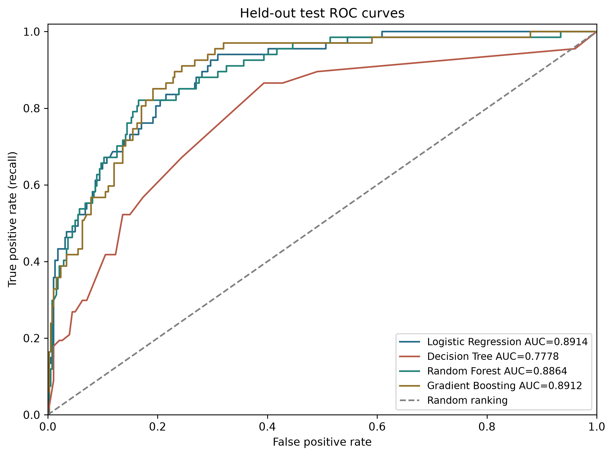
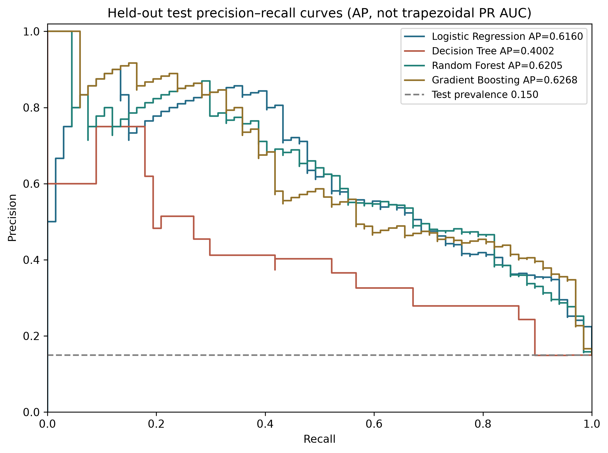
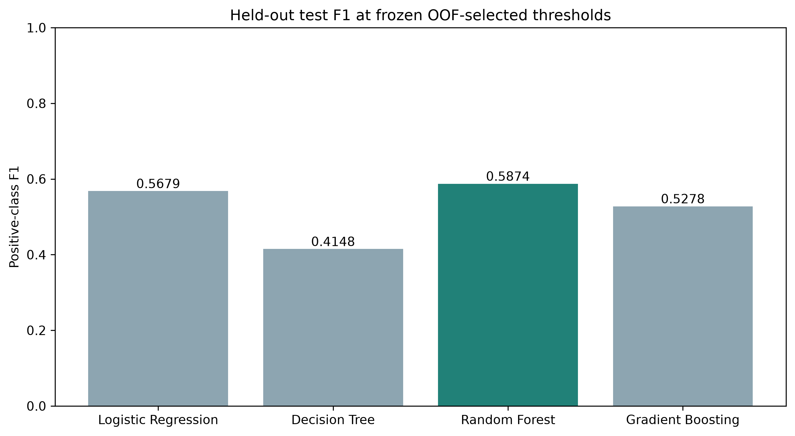
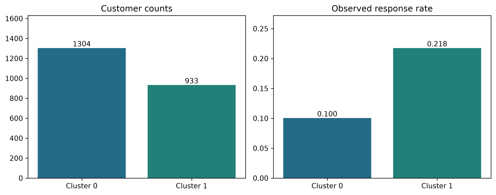
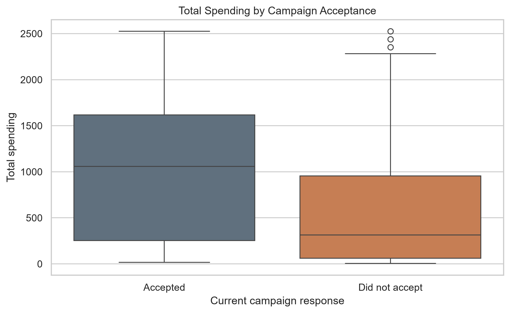
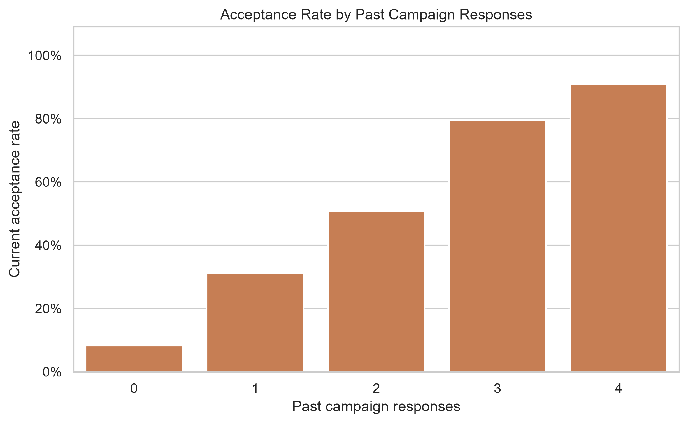

Calvin Abraham
Team Lead, Business Insights & Presentation
| Model | Threshold | CV F1 ± SD | Test accuracy | Precision | Recall | Test F1 | ROC AUC | AP |
|---|



| Predictor | F1 decrease | SD |
|---|
| Cluster | Customers | Share | Mean income | Mean spending | Web purchases | Store purchases | Young children | Observed response |
|---|



Team Lead, Business Insights & Presentation
Data Preparation & EDA
Predictive Modeling & Evaluation
Documentation & Report Editing
Analysis & Project Website